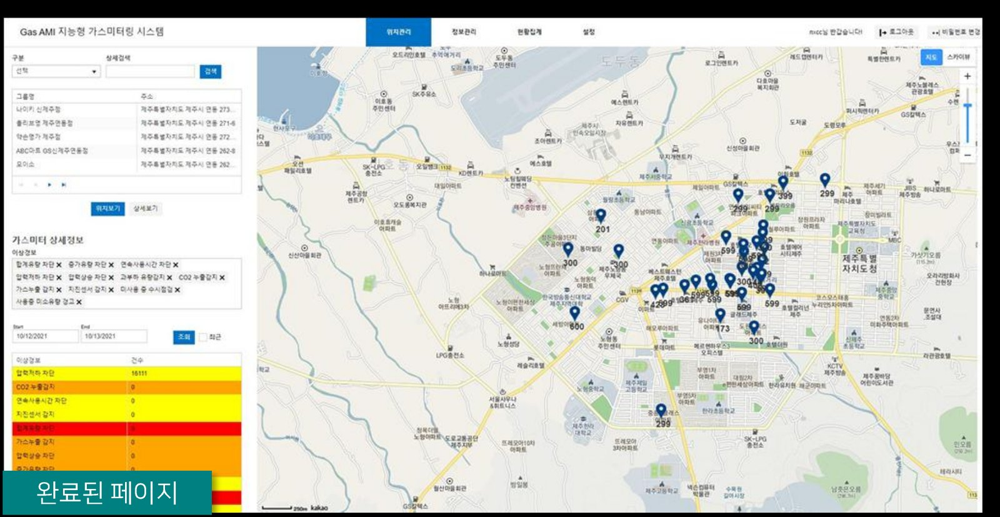

코나아이의 가스 AMI(원격검침 인프라) 관제 시스템을 요구사항 정의부터 웹 개발, APP 프로토타입까지 확장한 프로젝트. 전문 용어가 많은 도메인을 문서와 정보구조로 표준화해 이해관계자 간 커뮤니케이션을 풀어냈습니다.

가스 AMI(원격검침 인프라)는 계량기·통신모듈·검침주기 등 전문 용어가 많은 도메인입니다. 1차 웹 개발로 시작해 2차 APP 프로토타입까지 범위가 확장되는 과정에서, 서로 다른 배경의 이해관계자(고객사·개발팀·현장 관제 담당자)가 같은 용어를 다르게 이해하는 문제가 반복됐습니다.
계량기·통신모듈·검침주기 등 비전공자에게 낯선 전문 용어가 다수
전국 단위 가스 설치 현황을 지도 위에서 위험도별로 실시간 관제해야 함
1차 웹 개발 이후 2차 APP 프로토타입으로 범위가 넓어짐
공통 용어·플로우 정의 없이는 요구사항이 이해관계자마다 다르게 해석됨
용어가 어려운 서비스이기 때문에, 화면을 그리기 전에 문서로 용어와 플로우부터 표준화하는 것을 우선순위로 뒀습니다.
도메인 용어를 정의하고 관제 정책(위험도 등급 기준 등)을 문서로 표준화
전체 화면과 데이터 흐름의 관계를 한 장의 구조도로 정리해 팀 전체가 공유
설치 현황·위험도(안전/주의/경계/위험)를 지도 위에 색상으로 시각화
2차 APP 범위까지 실제 클릭 가능한 프로토타입으로 확장 제작
요구사항명세·기능정의·서비스정책서·프로토타입까지 전 과정 수행
1차 웹 개발에서 2차 APP 프로토타입으로 범위 확장
위험도 등급을 색상으로 구분한 실시간 관제 대시보드 기획
용어가 어려운 서비스였기 때문에, 서비스 정책서와 IA를 통해 커뮤니케이션 용어와 플로우를 먼저 정리하는 것이 프로젝트 전체를 원활하게 진행시킨 핵심이었다고 생각합니다.
문서로 기준을 먼저 세우고 나서야 지도 기반 관제 화면처럼 복잡한 정보를 다루는 화면도 이해관계자 모두가 같은 그림을 보고 논의할 수 있었습니다.
* 본 자료는 포트폴리오 목적으로 개인 기여 범위와 작업 프로세스만을 요약해 공개했습니다. 클라이언트사(코나아이)의 내부 기획 문서·계약 정보는 포함하지 않았습니다.
chaejenn@gmail.com